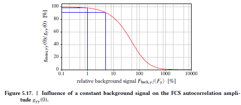
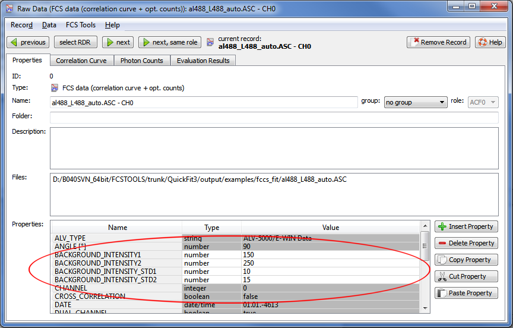

$$qf_commondoc_header.start$$ $$qf_commondoc_header.end$$
Introduction
In FCS, constant background intensities lower the measured correlation amplitude:
$$bmath:g_{\text{measured},gr}(\tau)=\underbrace{\frac{(F_{\text{meas},g}-B_g)\cdot(F_{\text{meas},r}-B_r)}{F_{\text{meas},g}\cdot F_{\text{meas},r}}}{<1}\cdot g_\text{true}(\tau),$$
where $$math:F_{\text{meas},g}$$ and $$math:F_{\text{meas},r}$$ are the measured (average) fluorescence intensities in the color channels g and r. $$math:B_g, B_r$$ ate the background intensities in these channels and $$math:g_\text{true}(\tau)$$ is the true correlation function, that we want to regain.
If the background intensities are known, most FCS fit models in QuickFit can take thos into account in Order to measure the true particle number, instead of the artificially increased number. The following figure shows the impact of the relative background intensitiy on the measure autocorrelation function amplitude:

Therefore this correction is especially important if the background and overall intensities are comparable, i.e. for dim samples and low concentrations.
Basic Storage
Most of the FCS data evaluation plugins in QuickFit support to take background intensities into account on one or the other way.
For FCS data, the background intensities are saved as (user-editable) properties in each RDR:
- BACKGROUND_INTENSITY1: average background intensity (in Hz) in the first channel (g)
- BACKGROUND_INTENSITY_STD1: std. deviation of the background intensity (in Hz) in the first channel (g)
- BACKGROUND_INTENSITY2: background intensity (in Hz) in the second channel (r)
- BACKGROUND_INTENSITY_STD2: std. deviation of the background intensity (in Hz) in the second channel (g)
The following pcture shows an example:

So in principle you can add these records to each FCS RDR, where they apply by hand, using the "Insert Property" button in the image above. A more convenient way is shown in the next two sections.
Setting background countrates in several RDRs
The properties mentioned above can be set in several FCS RDRs at the same time:
- In the main window of QuickFit 3.0, click on "Tools|FCS/DLS Tools|set background intensity in FCS/DLS datasets". A new window will pop open:

- In the upper part of the dialog, you may select the records, in which you want to set the backrgound intensities. You can select multiple records, by clicking them, while the CTRL key is pressed. It is also possible to filter the list of possible RDRs by entering a filter-phrase in the line edit "filter" above the list. THen only those records are displayed, where the given text appears in the name.
- Below the list of RDRs, the background intensity and its std.dev. can be entered into the table for each channel (row) separately. If you don't want to set values in a certain channel, you can uncheck it in the third column ("set this channel").
- Click on "OK" and the background intensities will be set according to the given values in all selected FCS RDRs.
$$note:Note however, that the background intensities are only set in records, that are selected and currently part of the project. If you add new RDRs later, you will have to repeat the steps above.$$
Setting background countrates based in a darkcount measurement
Often a measurement of the background rate is performed before the actual experiments, by measuring the buffer without fluorophores. If such a measurmeent is available, it is possible to use it as basis for the background countrates:
- Load the background measurement as FCS record and double-click on the according RDR in the project.
- Open the tab "Photon Counts".
- If the displayed countrates are OK, click on the menu entry "FCS Tools|set background from this records ...".
- The same window, as above pops up (see tutorial above), but with the count rates of the current record preset.